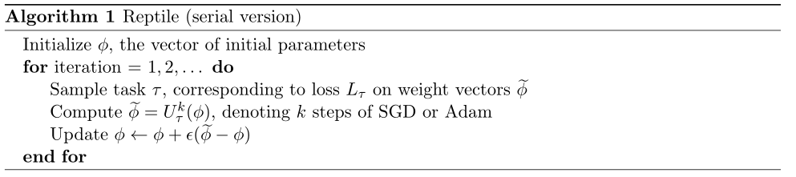

Reptile
PyTorch implementation of the supervised learning experiments from the paper: Reptile: A Scalable Meta-Learning Algorithm: https://blog.openai.com/reptile/ , which is based on Model-Agnostic Meta-Learning (MAML): https://arxiv.org/abs/1703.03400
Overview [Abstract]
This paper considers meta-learning problems, where there is a distribution of tasks, and obtain an agent that performs well (i.e., learns quickly) when presented with a previously unseen task sampled from this distribution. They analyze a family of algorithms for learning a parameter initialization that can be fine-tuned quickly on a new task, using only firstorder derivatives for the meta-learning updates. This family includes and generalizes first-order MAML, an approximation to MAML obtained by ignoring second-order derivatives. It also includes Reptile, a new algorithm that they introduce here, which works by repeatedly sampling a task, training on it, and moving the initialization towards the trained weights on that task. The authors expand on the results from Finn et al. showing that first-order meta-learning algorithms perform well on some well-established benchmarks for few-shot classification, and they provide theoretical analysis aimed at understanding why these algorithms work.

Ominiglot
change dataset = 'omniglot' in main.py and just run python main.py, the program will download omniglot dataset automatically.
modify the value of meta_batchsz to fit your GPU memory size.
Results
| Model | Fine Tune | 5-way Acc. | 20-way Acc | ||
|---|---|---|---|---|---|
| 1-shot | 5-shot | 1-shot | 5-shot | ||
| MANN | N | 82.8% | 94.9% | - | - |
| Matching Nets | N | 98.1% | 98.9% | 93.8% | 98.5% |
| Matching Nets | Y | 97.9% | 98.7% | 93.5% | 98.7% |
| MAML | Y | 98.7+-0.4% | 99.9+-0.1% | 95.8+-0.3% | 98.9+-0.2% |
| This Code | Y | 98.62% | 99.52% | 96.09% | 98.24% |
5way 1shot episode: 11580*512 finetune acc:0.990234 test acc:0.986250
5way 5shot episode: 27180*128 finetune acc:0.995625 test acc:0.995219
20way 1shot episode: 23160*128 finetune acc:0.960937 test acc:0.960898
20way 5shot episode: 11580*32 finetune acc:0.985938 test acc:0.982437
miniImagenet
train
mini-imagenetis extremely slow, since the code train task one by one squentially.
download mini-imagenet dataset and make it looks like:
mini-imagenet/
├── images
├── n0210891500001298.jpg
├── n0287152500001298.jpg
...
├── test.csv
├── val.csv
└── train.csv
MAML-Pytorch/
├── main.py
├── meta.py
├── Readme.md
├── naive.md
...
change dataset = 'mini-imagenet' in main.py and just run python main.py.
Results
| Model | Fine Tune | 5-way Acc. | 20-way Acc | ||
|---|---|---|---|---|---|
| 1-shot | 5-shot | 1-shot | 5-shot | ||
| Matching Nets | N | 43.56% | 55.31% | 17.31% | 22.69% |
| Meta-LSTM | 43.44% | 60.60% | 16.70% | 26.06% | |
| MAML | Y | 48.7% | 63.11% | 16.49% | 19.29% |
| Ours | Y | - | - | - | - |